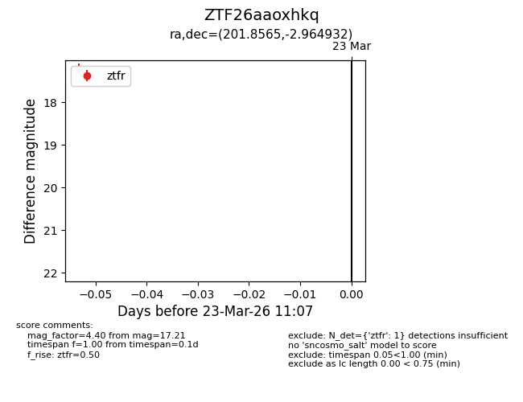
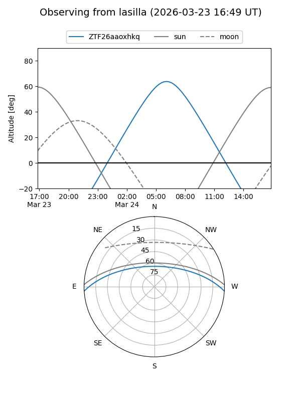
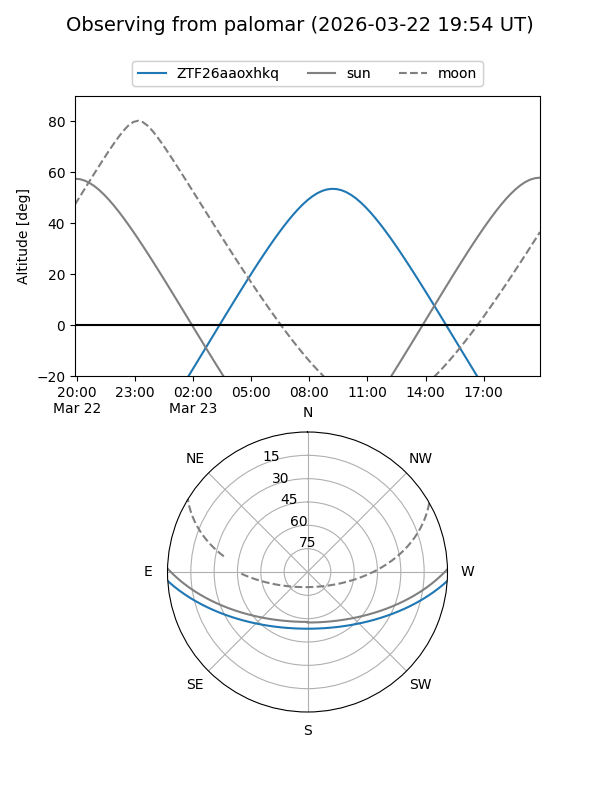

ZTF26aaoxhkq
Target ZTF26aaoxhkq at 2026-03-23 11:09
Aliases and brokers:
FINK: link
Lasair: link
ALeRCE: link
alt names
ZTF26aaoxhkq (ztf,fink_ztf)
Coordinates:
equatorial (ra, dec) = 201.8565,-2.96493
equatorial (HMS+DMS) = 13:27:25.57,-02:57:53.76
galactic (l, b) = (320.4159,+58.67980)
Flags:
Photometry:
last ztfr=17.21
1 ztfr detections
Lightcurve

Visibility


Additional plots